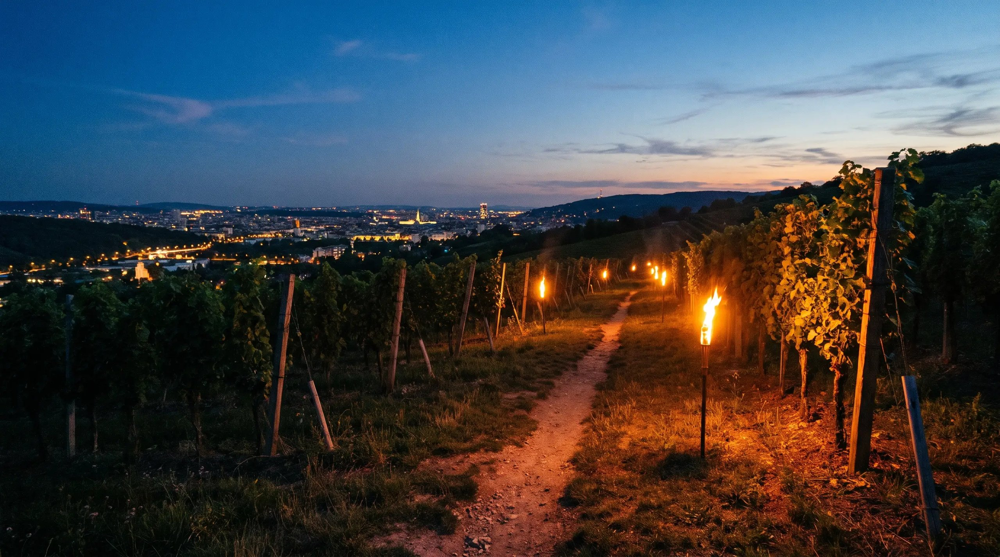

Besuch & Kontakt
Sonnbergstraße 89, 2380 Perchtoldsdorf — wenige Kilometer von Wien entfernt, mitten im Weinbaugebiet Thermenregion.
Montag bis Samstag
10:30 – 23:00
Sonntag & Feiertag
10:30 – 22:30
Diese Zeiten gelten während der Aussteckzeiten. Außerhalb: Ab-Hof-Verkauf nach Vereinbarung, Getränkeautomat rund um die Uhr.
tel:-Link — die Telefonnummer steht nur als Fließtext, auf dem Handy ist Anrufen damit Copy-and-paste. Hier ist jede Nummer antippbar. Die Anfahrtskarte wird als Link geöffnet, nicht als Google-Maps-iframe eingebettet: Das spart das Einwilligungs-Banner.Reservierung
Drei Schritte, keine Registrierung. An Tagen ohne Ausstecken ist keine Reservierung möglich — für Feiern nutzen Sie bitte die Feieranfrage.
Anfahrt
Die Sonnbergstraße liegt im Ortskern von Perchtoldsdorf, wenige Minuten von der Kaltenleutgebner Bahn und der Wiener Stadtgrenze entfernt. Der Gastgarten liegt direkt beim Haus.
